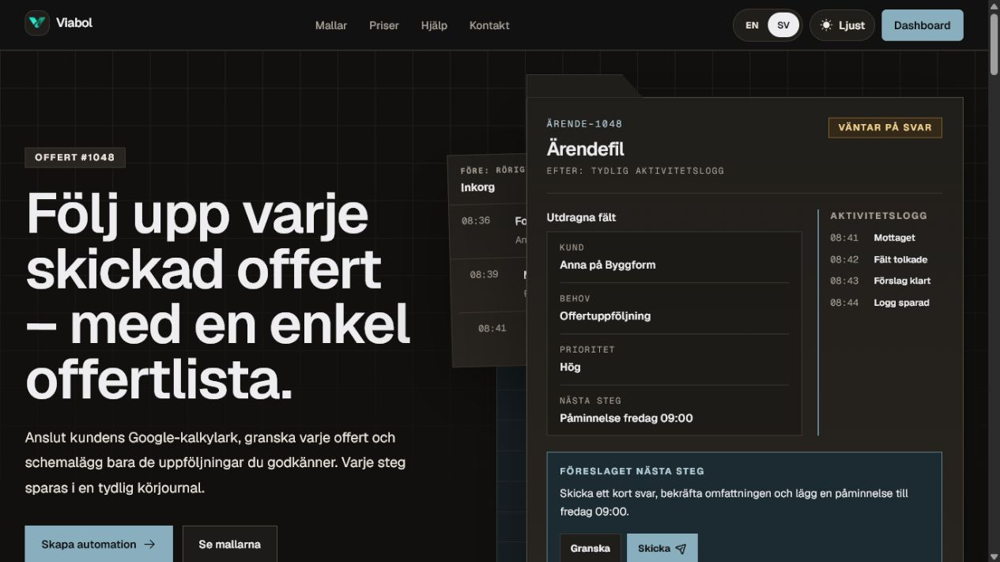
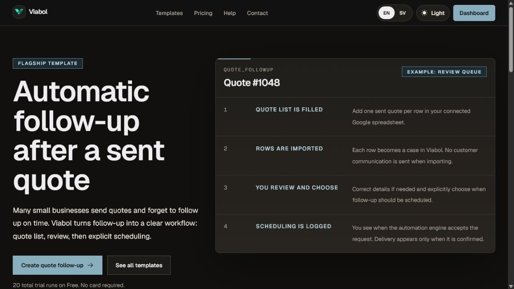
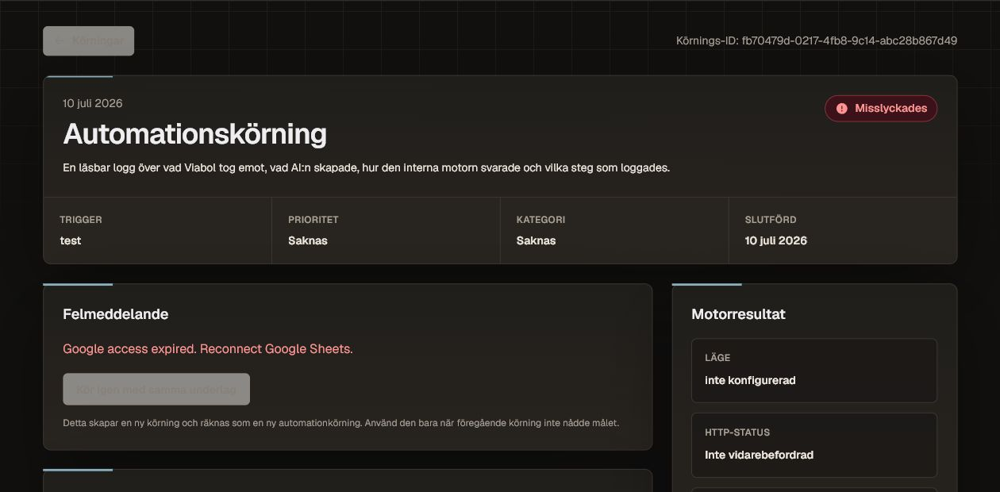

Problem
Small businesses repeat the same follow-up work, but most automation tools start with triggers, nodes, and field mappings.
A live product I designed and built
Making business automation understandable without a workflow builder
Viabol is an automation product I built for small service businesses. I worked on the product direction, design, copy, and code.
View live product
Small businesses repeat the same follow-up work, but most automation tools start with triggers, nodes, and field mappings.
I started with ready-made tasks, short setup, review before sending, and a history written in plain language.
I shaped the product, information architecture, interactions, UI, and copy, then built and shipped it myself.
Viabol is live with template setup, testing, review, scheduling, and run history. I still need to validate activation and paid value.
The product is easiest to understand through one task: set up quote follow-up, review it, then see exactly what happened.


I started by comparing workflow tools, watching what broke in real runs, and looking at the risk of sending messages to someone else's customers. Automation is hard to trust because most of it happens out of view.
How do I let someone set up, approve, and trust an automation without making them learn the engine behind it?
Zapier and n8n are powerful because you can build almost anything. I wanted Viabol to ask less from the user, so I made the task the starting point. The live comparison makes that trade-off clear.
Direction I dropped
Choose triggers, actions, connections, field mappings, and error paths.
Good: almost anything is possible
Cost: the user has to design the system
Direction I kept
Pick a template, finish a short setup, test it, and review the result.
Good: less to learn up front
Cost: Viabol supports fewer use cases
The first version used direct quote entry. I later added Google Sheets for businesses that already manage quotes there. Neither path sends or schedules anything without a clear decision.
The owner fills in the quote inside Viabol and chooses when to schedule the follow-up.
A spreadsheet row becomes something to review. Importing it does not schedule or send anything.
If something is wrong, the case goes back to review and points to the fields that need fixing.
If delivery fails, the error stays visible and retrying creates a separate run.
For me, trust had to show up in the flow itself. It could not just be a promise on the landing page.
As a practical check, I reviewed whether the flow showed system status, prevented mistakes, kept the user in control, and made recovery understandable.
Importing data never sends an email. Scheduling always needs a clear decision.
The interface separates an accepted request from a confirmed delivery or failed run.
The error says what failed, and the original run stays there when someone retries.
The input, result, engine response, and timeline stay available to check later.
The stack matters here because each service created a user-facing decision about access, feedback, privacy, or recovery.
Next.js, React, Tailwind CSS
Turns automation into a task people can set up, review, schedule, and follow.
Supabase Auth, Postgres, Row Level Security
Keeps records separated by account and protects connection details behind server-side access rules.
Activepieces, OpenAI API, Google Sheets, Resend, Stripe
Runs the workflow, drafts content, imports familiar data, sends email, and handles real billing states.
GitHub, Coolify, self-managed VPS, GA4
Supports controlled deployment and rollback, while analytics only load after the right consent.
Ownership: I made the product, interaction, visual, copy, and final build decisions. I used Codex for code support, debugging, and review, then checked and adapted the work before shipping.
Started with: entering each quote inside Viabol.
Changed to: keeping that simple path while adding a business-owned Google Sheet for recurring lists.
Trade-off: less typing, but another connection to maintain.
Explored: forwarding sent quotes to an inbox so Viabol could extract the details.
Held back because: uncertain fields added risk before I had proved the core review flow.
Trade-off: a spreadsheet feels less automatic, but is easier to understand and recover.
Problem: an engine accepting a job does not mean the customer received the email.
Changed to: separate scheduling, engine response, confirmed delivery, and failure.
Trade-off: more state design and logging, but fewer misleading success messages.
Viabol is a working early-stage product, not a finished success story. I separate what is already real from what I still need to validate.
What I would not do yet: add more templates before the current activation flow is clear without me explaining it.
I like product work where something technical has to feel clear, controllable, and safe for the person using it.
Press Escape to close or click outside the image.